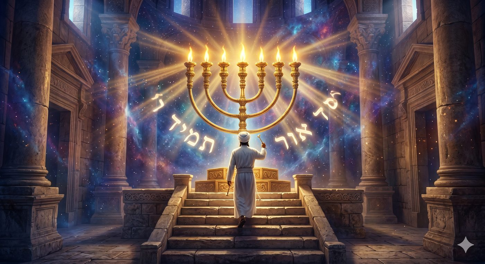
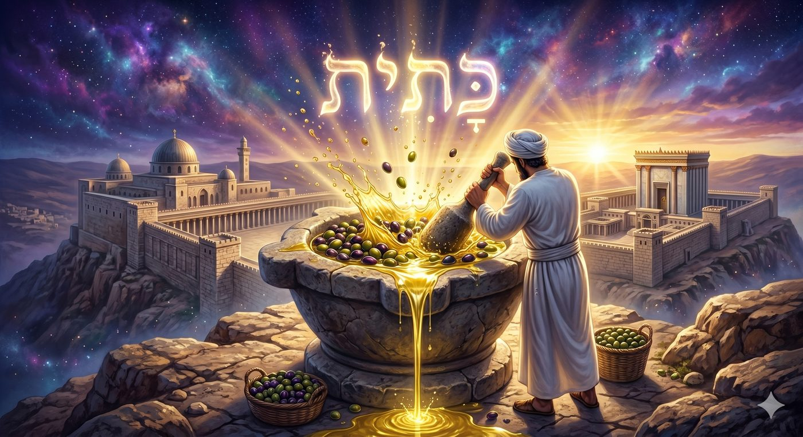
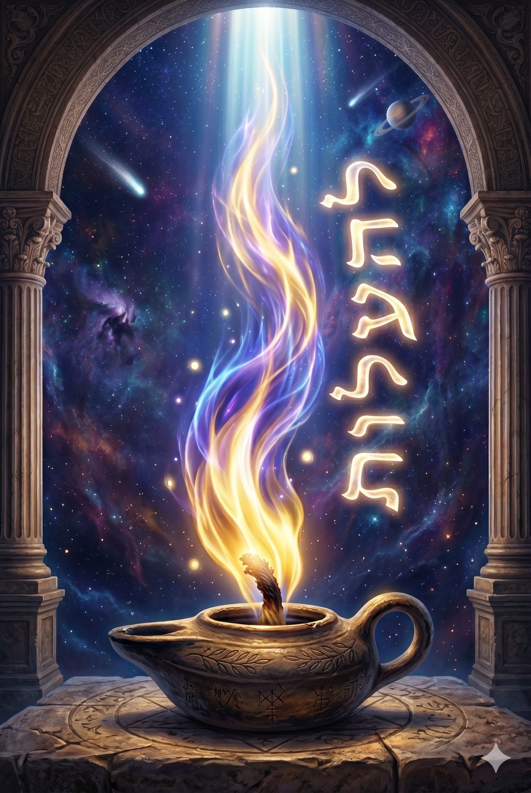
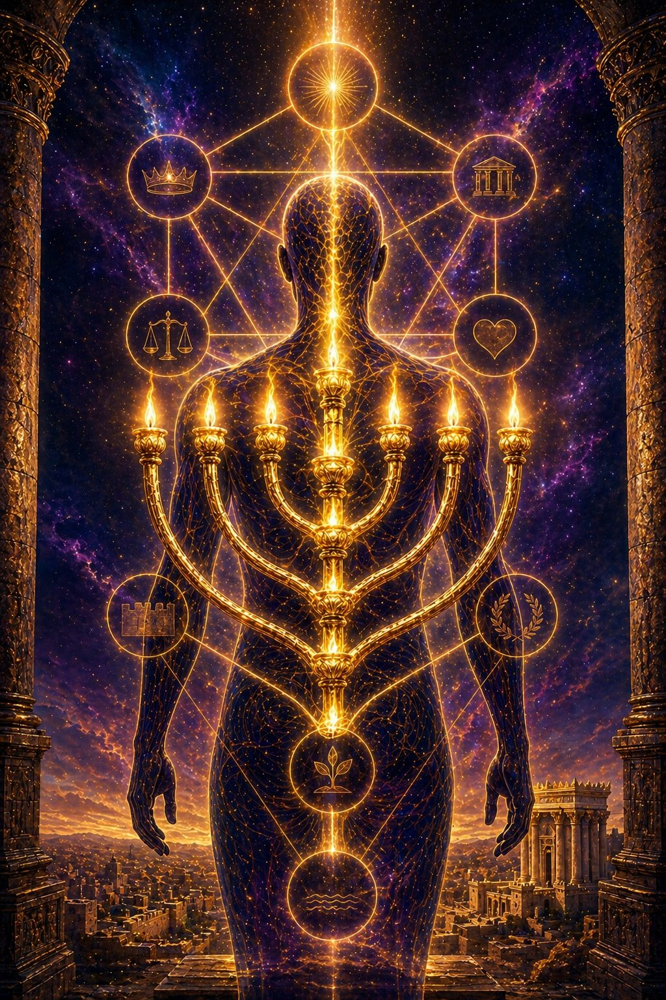
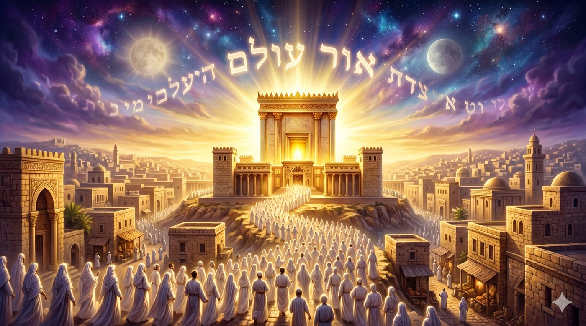

L’huile d’olive pure et concassée de la Menora
Quand l'huile pure de l'olive concassée de la Menora enseigne la métaphysique du juste, du tsadik, depuis le service du Temple jusqu'à la lumière messianique
Il existe dans la Torah des prescriptions techniques qui cachent un univers de sens. La loi du chemen zayit zah’ katit lamaor (שמן זית זך כתית למאור), « l’huile d'olive pure broyée pour la lumière » (de la Menora) (Vayikra 24:2), est de celles-là. Ces trois mots, accollé sans ornement, nous donnent l'instruction matérielle pour la Menora (מנורה) du Michkan (משכן), puis du Beth Hamikdach, le Temple. Un mot pour la matière (chemen zayit, l'huile d’olive), un mot pour la qualité (zah’, pure), un mot pour le procédé (katit, broyée). Et autour de cette laconique prescription, vingt siècles de méditation juive sur la nature de la lumière, sur la vocation du juste, sur le sacrifice intérieur.

La paracha Emor (אמור) déploie une architecture en trois temps. Elle ouvre par les lois des Kohanim (Vayikra 21), ces hommes voués à la sainteté du service. Elle culmine dans le grand calendrier des Mo'adim (Vayikra 23), ces rendez-vous où le Saint convoque l'âme. Et elle se prolonge, en ouverture de Vayikra 24, par deux prescriptions jumelles, l'huile de la Menora et les leh'em hapanim (לחם הפנים), les pains de proposition. Cette séquence n'est pas anodine car après avoir sanctifié les hommes (les Kohanim) et le temps (les Mo'adim), la Torah revient à la matière, à l'huile, au pain, nous enseignant que la sainteté ne peut s'accomplir qu'en redescendant dans la chair des choses pour y déposer une âme.
Le mot katit est l'épine de toute cette construction. Il signifie « broyée », « concassée », et il scandalise. Pourquoi la lumière la plus pure du Temple devrait-elle exiger d'abord une violence faite à l'olive ? Pourquoi le fruit entier ne suffit-il pas ? Cette question, posée par Rachi, par le Talmud (Mena'hot 86a), par le Maharal et par toute la tradition hassidique, ouvre une méditation qui dépasse de loin la mécanique du Temple. Elle nous conduit au cœur de la doctrine du tsadik (צדיק), au cœur de la métaphysique de l'épreuve, et finalement au mystère de la flamme messianique qui n'aura plus besoin du soleil.
L'objet de cette étude est de déployer, avec l'aide du Ciel et de nos Maîtres, la portée métaphysique de la loi du chemen zayit zah’ katit lamaor. Nous nous appuierons sur le Talmud Bavli (Mena'hot 86a, Yoma 24a, Chabbat 22b), sur Rachi et sur le Sifra, sur le Zohar (Pin'has et Tetsavé), sur le Maharal (Ner Mitzva, Tiferet Israel), sur le Sfat Emet, sur le Nefesh HaH'aïm de Rabbi H'aïm de Volozhin (Chaar IV) et sur le Ari z"l (Chaar HaKavanot, drouchei Hanouka), pour montrer que l'olive broyée n'est pas une simple exigence cultuelle, mais le paradigme de toute vie sanctifiée. La Menora enseigne en silence que la lumière la plus pure provient de la fracture acceptée, et que c'est par les pressoirs de l'épreuve que l'âme distille en elle l'huile dont elle alimentera, très vite nous l’espérons, la flamme messianique.
Or tamid (אור תמיד) de la Menora, les deux sens du mot tamid, perpétuel ou régulier
Chemen zayit zah’ (שמן זית זך), la pureté de l'huile de la Menora et la métaphore de la sagesse
Katit (כתית), le mystère du broyage qui élève la lumière de la Menora
Lehaalot ner (להעלות נר), faire monter la flamme de la Menora
Velo katit lamenah'ot, la nuance que Rachi tire pour les offrandes ordinaires
La Menora, archétype de l'âme selon le Maharal (Ner Mitzva)
Le tsadik broyé, l'épreuve qui purifie l’huile de la Menora
Ner Hachem nichmat adam (Mich. 20:27), la flamme divine de la Menora au cœur de l'homme
Sept branches de la Menora, sept âmes, la cartographie kabbalistique selon le Ari z"l
Vehaya lakh Hachem leor olam (Yech. 60:19), la lumière messianique surabondante de la Menora
Le verset prescrit leha'alot ner tamid (להעלות נר תמיד), « pour faire monter une flamme perpétuelle » (Vayikra 24:2). Le mot tamid (תמיד) est l'un de ces mots qui paraissent simples et qui se révèlent, à l'examen, doublement habités. En français nous traduisons par « toujours », mais l'hébreu biblique distingue deux registres que cette traduction écrase. Tamid peut signifier soit la continuité ininterrompue, comme dans la avoda tamid (le service constant), soit la régularité quotidienne, comme dans korban tamid (l'offrande de chaque jour). Toute la question est alors de décider laquelle de ces deux acceptions s'applique à la flamme de la Menora.
Le Talmud Bavli (Mena'hot 89a) tranche en faveur de la deuxième acception. Le ner tamid n'est pas une flamme qui ne s'éteint jamais, c'est une flamme qu'on rallume chaque jour à heure fixe. Plus précisément, ce sont sept lampes que le Kohen allume chaque soir et qu'il remplace chaque matin par une huile fraîche. La Menora n'est donc pas un brasier perpétuel, c'est la chorégraphie d'un allumage quotidien. Sa permanence est la permanence d'un rite répété qui ne peut se passer de l'homme.
Cette nuance est décisive. Onkelos, dans sa version araméenne, traduit ner tamid par boussina tedira (תדירא בוסינא), « lampe régulière », confirmant la lecture du Talmud. Et Rachi, dans son commentaire sur Vayikra 24:2, écrit explicitement, kol layla velayla, « chaque nuit l'une après l'autre ». Le tamid de la Menora est un tamid d'alliance, et non pas un tamid d'autonomie. La flamme dépend de l'allumage humain, et chaque jour le Kohen monte sur l'estrade pour la rallumer. Si le Kohen n'y monte pas, la flamme ne brûle pas.
Le Maharal, dans Ner Mitzva, en tire une conséquence vertigineuse. La sainteté juive, dit-il, n'a jamais été pensée par la Torah comme une lumière qui se garderait d'elle-même. Elle est, dans son essence même, un service quotidiennement renouvelé. Celui qui s'imagine que la lumière qu'il a allumée hier brûle encore aujourd'hui se trompe. Chaque matin il faut remonter sur l'estrade, vider la cendre de la veille, déposer l'huile fraîche, ranimer la mèche. C'est cette régularité, et non une intensité prodigieuse, qui constitue la vraie avoda. Le tamid de la Menora est alors l'archétype de la fidélité juive, qui n'est jamais acquise mais toujours à reposer sur l'autel.
Le Sfat Emet (sur Emor, 5634) prolonge cette pensée. Il enseigne que la flamme intérieure de l'âme suit la même loi. Aucune élévation atteinte hier ne dispense l'homme de l'élévation requise pour aujourd'hui. Le ratso vachov (ושוב רצוא), le mouvement de va-et-vient des créatures célestes, les H'ayot du char décrit par le prophète Ezékiel, est la structure de la sainteté dans ce monde. La sainteté monte, redescend, remonte, à l’infiini. Elle vit du rythme du tamid quotidien, non de la stabilité du tamid permanent.
Le tamid de la Menora n'est donc pas une combustion qui se prolonge, mais un allumage qui se reprend. Il enseigne que la sainteté juive vit d'un rite quotidien, et que la flamme intérieure de l'âme suit la même loi de fidélité ranimée. Avant même d'examiner l'huile et le broyage, le verset nous installe dans la temporalité d'une avoda renouvelée, où chaque jour exige son propre allumage.
L'olive apparaît pour la première fois dans le bec de la colombe que No'ah envoie depuis l'arche, alé zayit taraf befiha (Béréchit 8:11), « une feuille d'olivier fraîche dans son bec ». L'olive annonce alors la décrue du Déluge, le retour possible de la terre, la reprise de l'alliance. Elle dit que la vie résiste sous l'eau et qu'elle reverdit. Cette charge symbolique va peser sur tout l'usage cultuel de l'olive, et c'est elle qu'il faut entendre quand la Torah prescrit, des siècles plus tard, chemen zayit zah’ pour la Menora.
Le mot zah’ (זך), traduit ici par « pure », n'est pas synonyme de tahor (טהור), qui signifie « rituellement pur ». Zah’ désigne une pureté de transparence, une absence d'opacité, une qualité optique. L'huile zah’ est celle à travers laquelle la lumière passe sans être déviée. Le Talmud (Mena'hot 86a) précise qu'il s'agit de la première goutte qui s'échappe de l'olive lorsqu'on la presse délicatement, sans encore broyer la pulpe. Cette goutte initiale, miv'h'ar hazaït הזית מבחר « le choix de l'olive », est la plus claire et la plus subtile. Elle seule mérite la Menora. Les pressages successifs, plus opaques, sont reversés vers les menah'ot, les offrandes de farine, où la lumière n'est pas l'enjeu.
Le Talmud (Mena'hot 85b), dans une page d'une beauté rare, joue sur l'expression yakar mé'h'okhma mikavod siklout me'at (Kohélet 10:1), « plus précieuse que sagesse et qu'honneur, une once d'insanité ». Il met en parallèle l'huile et la sagesse. Yavoï shemen zaït chochékh, vela'h'al chemen zaït chel hatekala, « que vienne l'huile sombre, et qu'elle dispute la place à l'huile de la pesée ». Cette page talmudique, célèbre sous le nom de yavoï shemen zaït, enseigne que la pureté de l'huile est le strict analogue de la pureté de la sagesse. Une sagesse mêlée d'orgueil est une huile opaque, elle ne laisse pas passer la lumière, et ne convient pas à la Menora.
Le Maharal, dans Tiferet Israel (chapitre 41), pousse l'analogie. Il enseigne que la Torah, quand elle est étudiée lichmah (לשמה), pour elle-même, est précisément une huile zah’a. Elle laisse passer le rayon divin sans projeter l'ombre du sujet. Quant au contraire la Torah est étudiée pour des fins extérieures, gloire, prestige, controverse, l'huile s'opacifie. Elle peut encore brûler, mais sa flamme est faible et fume. Le Talmud (Avot 3:11) parle de ceux qui mégalé panim baTorah chelo ké'halakha, « interprètent la Torah à contre-courant de la halakha », dont l’huile est trouble.
Le Sfat Emet (sur Emor, 5642) ajoute une note intérieure. Il observe que les lettres du mot zah’ (זך) totalisent la valeur 27, soit la même valeur que le mot or (אור) en gematria étendue (technique utilisée par nos sages consistant à baisser le 200 en 20 et dès lors : אור équivaut à 20+6+1=27). La pureté est donc, dans la lettre même de l'hébreu, structurellement liée à la lumière. Etre zah’, c'est être lumineux, parce qu'aucune ombre ne s'est encore déposée sur l'âme. Le service de la Menora commence par cette exigence préliminaire, l'huile doit être pure, c'est-à-dire l'âme du Kohen qui la verse doit elle-même être zah’a, transparente à la lumière qu'elle s'apprête à laisser passer.
La pureté de l'huile n'est donc pas une exigence de propreté rituelle, mais une exigence essentielle de transparence. L'huile zah’a est celle qui ne dévie pas la lumière, et le Kohen qui la verse doit lui-même se tenir dans cette transparence. La Menora exige une sagesse étudiée lichmah, une âme délivrée de l'opacité de l'orgueil, et c'est seulement à ce prix que la flamme du Temple peut prendre.
Et pourtant, la pureté ne suffit pas. Le verset ajoute katit, « broyée ». L'huile zah’a la plus précieuse est celle qui a traversé un broyage. Comment comprendre cette double exigence apparemment contradictoire ? La pureté est l'intégrité, le broyage est la fracture. Comment l'intégrité pourrait-elle dépendre de la fracture ?

Rachi, dans son commentaire sur Vayikra 24:2, formule la nuance avec précision. Katit signifie « broyée au mortier, et non moulue à la meule ». Le broyage du mortier est moins violent que celui de la meule, il extrait l'huile par pressions successives, sans chauffer la pulpe ni détruire la structure du fruit. Le Talmud (Mena'hot 86a) précise les étapes : on cueille les olives, on les laisse égoutter dans des paniers, on en extrait délicatement la première huile, puis on broie au mortier ce qui reste. C'est cette deuxième huile, katit, qui est destinée à la Menora.
Mais une question demeure. Pourquoi la Menora exige-t-elle l'huile broyée et non l'huile la plus premium, celle qui s'écoule sans pression ? La réponse de Rachi, et plus encore celle du Maharal, est saisissante. La première huile, qui sort sans broyage, est trop facile, elle n'a pas connu l'épreuve. Elle est pure mais elle n'est pas travaillée. La deuxième huile, katit, a traversé le broyage du mortier, et c'est précisément cette traversée qui lui confère la qualité requise pour le service de la Menora. La lumière la plus haute du Temple ne se contente pas de la pureté donnée, elle exige la pureté acquise par le pressage.
Le Talmud Bavli (Berah’ot 5a) énonce une thèse audacieuse, kol mi cheHakadoch Baroukh Hou h'afetz bo, medakeo beyissourim, « celui que Hachem chérit, Il le concasse par les épreuves ». Ce medakeo (du verbe daka, broyer) est le cousin verbal de katit. Le Talmud désigne ainsi par avance ce que la Menora annonce en silence, à savoir que les âmes destinées à porter la lumière la plus pure sont précisément celles qui ont traversé un broyage. L'huile s'extrait de l'olive cassée, la lumière s'extrait de l'âme éprouvée.
Le prophète Yech'aya'hou décrit le serviteur souffrant en des termes qui font écho à cette structure, vé'Hachem h'afets dako h'ali im tassim acham nafcho (Yech. 53:10), « et Hachem voulut Le briser, le rendre malade ». Le verbe daka y revient, en relation explicite avec une vocation de réparation. Le serviteur broyé devient porteur de lumière, yiré or yisbéa (Yech. 53:11), « il verra la lumière, il sera rassasié ». Yech'aya'hou ne fait que prolonger, sur un mode prophétique, ce que la Torah avait déjà inscrit dans la prescription technique de la Menora.
Le Zohar (Pin'has III:235b) reprend cette dialectique sous forme mystique. Il enseigne que toute lumière supérieure est précédée d'un itkatchout (התכתשות), un combat, une lutte, une fracture. Le mot itkatchout est lui-même apparenté, dans la racine, à katit. Le Zohar inscrit ainsi le broyage dans la structure même de la révélation. Il n'y a pas de manifestation de la lumière qui ne passe par un froissement de l'écorce, sans quoi la lumière resterait piégée, identique à elle-même, incapable de rayonner.
Le broyage n'est donc pas une violence faite à l'olive, c'est l'acte par lequel l'olive donne sa lumière. La Menora enseigne en silence que la pureté de la première goutte est insuffisante pour le service le plus haut, que la lumière véritable exige un passage par la fracture, et que cette loi du broyage est inscrite, depuis l'olive du mortier jusqu'au serviteur souffrant d'Yech'aya'hou, dans la structure même de la révélation.
Le verset emploie un verbe qu'il faut interroger, leha'alot (להעלות), « faire monter ». Pourquoi ne pas dire lehadlik (להדליק), « allumer » ? La Torah connaît parfaitement le verbe lehadlik, elle l'utilise en de nombreux endroits. Mais pour la Menora, elle préfère leha'alot. Ce choix est commenté par Rachi sur Bamidbar 8:2 (paracha Behaaloteh’a), avec une formule qui est devenue classique, « jusqu'à ce que la flamme monte d'elle-même ».
Cette précision est décisive. Le Kohen ne se contente pas d'appliquer la mèche enflammée à la lampe, il l'y maintient jusqu'à ce que la flamme s'autonomise, jusqu'à ce qu'elle continue de monter sans plus dépendre de la mèche extérieure. Leha'alot signifie donc, littéralement, « accompagner la flamme dans son ascension jusqu'à son autonomie », avec patience.
Le Sfat Emet (sur Behaaloteh’a, 5632) tire de cette précision une doctrine de l'éducation et du kirouv (rapprochement). Celui qui veut éveiller un autre à la avoda ne peut pas se contenter de lui transmettre une étincelle et le laisser. Il doit accompagner cette étincelle dans son ascension, jusqu'à ce qu'elle devienne autonome. Si l'étincelle s'éteint dès que le maître se retire, le travail n'est pas accompli. Le Sfat Emet y voit le modèle de la transmission juive, où le maître doit être patient comme la flamme, et accompagner le disciple jusqu'au seuil où sa propre lumière prend le relais.
Le Maharal, dans Ner Mitzva, propose une lecture plus métaphysique. Il enseigne que la flamme, par sa nature, désire monter. Elle est, dans toute la philosophie médiévale, le symbole de la spiritualité, du penchant naturel vers le haut. Lorsque le verset dit leha'alot ner, il décrit la nature même de la flamme. Faire monter la flamme, c'est la laisser être ce qu'elle est, c'est lever les obstacles à son ascension, c'est lui rendre la dignité de son élan, sa liberté.

Le Nefesh HaH'aïm (Chaar IV chapitre 11) prolonge cette analyse jusqu'à l'âme humaine. L'âme, écrit Rav H'aïm de Volozhin, est une flamme qui désire monter vers sa source. La avoda ne consiste pas à la pousser vers le haut, ce qui serait une violence, mais à lever les obstacles qui la retiennent en bas. Quand l'homme étudie la Torah, prie avec kavana (intention), accomplit une mitsva, il ne fait que lever ces obstacles. La montée elle-même appartient à la flamme, qui n'attend que d'être libre pour rejoindre sa source.
Le Ari z"l, dans le Chaar HaKavanot (Chaar HaMitzvot, paracha Behaaloteh’a, et Pri Etz H'aïm, Chaar H'anouka) formule une prescription liturgique fondée sur cette doctrine. Il enseigne que celui qui allume les lumières du Chabbat ou de H'anouka doit avoir l'intention de leha'alot, c'est-à-dire de faire monter la lumière jusqu'à son autonomie spirituelle.
Cette kavana, dit le Ari z"l, transforme l'allumage matériel en un acte de réparation cosmique, où chaque flamme allumée ici-bas correspond à une élévation de la Chékhina (שכינה) en haut.
Le verbe leha'alot révèle que la mitsva de la Menora n'est pas un geste d'allumage mais un service d'accompagnement. Le Kohen attend que la flamme monte d'elle-même, et c'est cette patience qui définit la avoda. La transmission spirituelle, l'éducation du disciple, l'éveil de l'âme suivent la même loi. La lumière véritable n'est jamais imposée, elle est libérée, et celui qui sait attendre que la flamme prenne son envol seul accomplit en silence l'œuvre la plus haute.
Rachi, sur Vayikra 24:2, ajoute une remarque qui a fait couler beaucoup d'encre. Katit lamaor velo katit lamenah'ot, « broyée pour la lumière, et non broyée pour les offrandes ». Cette précision laconique enseigne que toutes les huiles utilisées dans le service du Temple ne sont pas soumises à la même exigence. Pour la Menora, qui produit la lumière, il faut l'huile katit, broyée au mortier. Pour les menah'ot, les offrandes de farine mélangée à l'huile, l'huile peut être moulue à la meule, plus opaque, plus économique, mais suffisante.
Cette hiérarchie a une portée spirituelle importante. Toutes les œuvres ne se valent pas. Il existe des œuvres qui produisent de la lumière, et d'autres qui produisent simplement de la nourriture. Les premières exigent un broyage particulier, les secondes peuvent se contenter d'un traitement plus grossier. Le Maharal, dans Tiferet Israel (chapitre 56), commente que la Torah elle-même connaît ces deux régimes. Il y a la Torah étudiée pour la lumière, Torah lichma en son sens le plus strict, qui exige le broyage. Et il y a la Torah étudiée pour la pratique, Torah lo lichma, qui exige la régularité plus que l'épreuve.
Le Sfat Emet (sur Emor, 5648) prolonge l'analogie sur le terrain de la Avoda. Toutes les mitsvot, dit-il, ne demandent pas le même degré d'ascèse. Il y a celles qu'on accomplit comme on respire, sans effort particulier, et qui sont pleinement valables. Et il y a celles qui exigent un broyage intérieur, une lutte contre l'inertie, une fracture du yetser hara. Les premières nourrissent l'homme comme les menah'ot nourrissent l'autel, les secondes éclairent la Menora. Toutes deux sont nécessaires, toutes deux ont leur place dans le service, mais elles ne se substituent pas l'une à l'autre.
Le Talmud (Berah’ot 8a) cite le verset Hachem oheiv chaarei Tsion mikol michkenoth Yaakov (Tehilim 87:2), « Hachem aime les portes de Tsion plus que toutes les demeures de Yaakov ». Le Talmud commente, oheiv Hachem chaarim hametsouyanim bahalah’a, « Hachem aime les portes distinguées par la halah’a ». Rachi explique que ces portes sont les beth midrach où l'on étudie la halah’a avec le broyage requis. Ce sont les Menorot d'Israël, les lieux d'où jaillit la lumière. Les autres lieux d'étude, plus paisibles, plus spéculatifs, sont les menah'ot, ils nourrissent l'âme mais ne produisent pas la flamme.
Le Nefesh HaH'aïm (Chaar IV chapitre 9) tire de cette distinction une doctrine pratique. Il y a deux modes d'étude qui doivent coexister dans la vie d'un Juif. Le mode katit, qui est l'étude exigeante, en profondeur, où l'on broie le texte par les questions, où l'on souffre devant la difficulté, et qui produit la lumière. Et le mode menah'ot, qui est l'étude régulière, fluide, courante, où l'on parcourt la Torah pour s'en imprégner, et qui produit la nourriture quotidienne. Aucun des deux ne suffit seul, et c'est leur articulation qui constitue la avoda complète attendue.
La nuance de Rachi entre la Menora et les menah'ot enseigne qu'il existe une hiérarchie des œuvres. Toutes les actions ne produisent pas de la lumière, certaines ne font que nourrir, et c'est très bien ainsi. Mais celui qui prétend produire de la lumière sans accepter le broyage requis se trompe. La flamme la plus haute du Temple exige une huile particulière, et l'âme qui veut éclairer doit se laisser concasser au mortier de l'épreuve.
Le Maharal de Prague consacre, dans son ouvrage Ner Mitzva, une oeuvre entière à la Menora. Le titre lui-même renvoie au verset Ner Hachem nichmat adam (Mich. 20:27), « la flamme de Hachem est l'âme de l'homme ». Pour le Maharal, la Menora du Temple est le portrait sculpté de l'âme humaine, et toute sa structure technique enseigne en silence la structure de l'âme.
Le Maharal commence par observer la composition de la Menora. Elle comporte une tige centrale (le kané) et six branches latérales (trois à droite, trois à gauche). Sept en tout, comme les sept jours de la semaine, comme les sept middot (qualités morales) de la mystique juive, les sept canaux de l'émanation divine. Chaque branche se termine par une coupe qui reçoit l'huile et la mèche. La structure est entièrement en or, zahav tahor (or pur), travaillée d'une seule pièce, mikcha (Chemot 25:31), sans soudure ni assemblage.
Cette unité travaillée est, pour le Maharal, le symbole exact de l'âme. L'âme aussi est une, mais elle se déploie en plusieurs facultés, en plusieurs middot, qui ressemblent aux six branches latérales. La tige centrale représente le tronc unique de l'âme, son or penimi (lumière intérieure). Les branches représentent les facultés extérieures, h'okhma, bina, daat, h'essed, gvoura, tiferet. Toutes naissent du même tronc, toutes culminent vers la même lumière.
Le Maharal insiste sur le caractère miqcha. La Menora ne pouvait pas être assemblée par soudure. Elle devait être façonnée d'un seul bloc, par martelage. Pourquoi ? Parce que l'unité de l'âme n'est pas une addition de morceaux, c'est une émergence d'un même bloc. Une âme ne se construit pas par juxtaposition de qualités acquises séparément, mais elle se révèle, par martèlement de la matière brute, en faisant apparaître progressivement les branches qui dormaient dans le bloc. C'est une œuvre de patience et de coup, comme l'orfèvre qui fait surgir la Menora du lingot d'or.
Le Talmud (Mena'hot 29a) rapporte une difficulté technique célèbre. Moché Rabenou, recevant l'ordre de fabriquer la Menora, ne comprennait pas comment procéder. Hachem dut lui montrer la Menora de feu, Menora chel ech, dans le ciel, et Moché ne sut toujours pas la reproduire. Finalement, dit le Talmud, Hachem lui dit de jeter le bloc d'or dans le feu, et la Menora en sortit d'elle-même. Le Maharal commente que cette difficulté n'était évidemment pas accidentelle. Elle enseigne que la Menora, comme l'âme, ne se fabrique pas par calcul, elle émerge du feu. L'œuvre de l'homme est de jeter le lingot dans le brasier de la avoda, et de laisser la flamme révéler la forme.
Cette doctrine du Maharal a une conséquence pratique majeure qui rejoint le Nefesh Hahaim. L'âme ne se construit pas, elle se révèle. Le travail de l'homme n'est pas d'ajouter des qualités à une âme nue, c'est de lever les voiles qui empêchent l'âme déjà tout entière donnée de se manifester. L'huile, le mortier, le feu, la mèche, ne sont que les instruments par lesquels la Menora déjà inscrite dans le bloc d'or apparaît au regard. Et la lumière qui en sort n'est pas produite, elle est libérée.
La Menora du Temple est, pour le Maharal, le portrait sculpté de l'âme. Sa structure d'un seul bloc enseigne que l'unité de l'âme n'est pas une somme mais une émergence, et le miracle technique de sa fabrication enseigne que l'âme ne se construit pas mais se révèle, par jet dans le feu de la avoda. La lumière qu'elle émet n'est jamais une création, elle est une libération, et le Kohen qui l'allume ne fait que lever les voiles qui retenaient le rayon.
Le Sfat Emet (Rabbi Yehouda Aryeh Leib de Ger), dans plusieurs de ses maamarim sur la paracha Emor (notamment 5634, 5642, 5648), revient avec une insistance touchante sur le mot katit. Il y voit l'image même du tsadik, celui dont l'épreuve est la condition de la lumière. Sa doctrine, qu'on peut suivre à travers les années, dessine une figure du juste qui n'est ni stoïque ni passive, mais activement consentante au broyage qu'exige sa vocation.
Le Sfat Emet part d'une observation talmudique. Le Talmud Bavli (Mena'hot 53b) commente que les tsadikim sont comparés à l'olivier, zaït raanan, et que toutes les comparaisons végétales ne sont pas équivalentes. Pourquoi spécifiquement l'olivier ? Parce que l'olivier ne donne son fruit qu'après une longue maturation, et que le fruit lui-même ne donne sa lumière qu'après broyage. L'olivier enseigne donc une triple patience, celle de la croissance, celle du fruit, celle du pressage. C'est cette triple patience qui constitue, pour le Sfat Emet, la signature du juste.
Le tsadik, écrit le Sfat Emet, est l'homme qui sait traverser la souffrance comme l'olive traverse le mortier. Il ne s'y dissout pas, il ne s'y révolte pas, il s'y livre, sachant que la lumière qu'il porte ne s'extraira que par cette traversée. Cette livraison consentie, qui ne se confond pas avec la résignation, est l'acte spirituel le plus haut, parce qu'elle réconcilie en silence la douleur de l'épreuve et la nécessité du sens.
Le Sfat Emet invoque la figure d'Iyov (Job), le grand broyé de la Bible. Iyov a tout perdu, ses biens, ses enfants, sa santé. Il a été concassé au mortier de la souffrance la plus extrême. Et au sortir de cette épreuve, il accède à une vision de Hachem qu'il n'aurait jamais atteinte sans le broyage. Lechema ozen chmaatikha veata eyni raatekha (Iyov 42:5), « par l'oreille je T'avais entendu, et maintenant mon œil T'a vu ». L'épreuve a ouvert son œil. La douleur a transmuté l'écoute (hasardeuse par nature) en vision (claire par définition). Iyov est, pour le Sfat Emet, l'olive paradigmatique, broyée jusqu'à donner son huile la plus pure, et finalement éclairée par la lumière qu'il a lui-même nourrie.
Cette doctrine du Sfat Emet a une portée pratique très concrète. Elle enseigne que la souffrance, quand elle survient, n'est pas une déviation accidentelle de la vie spirituelle, mais souvent sa voie centrale. Celui qui prie pour être épargné de toute épreuve prie en réalité pour rester une olive entière, c'est-à-dire pour ne jamais donner sa lumière. La prière juste, pour le Sfat Emet, n'est pas la demande d'être épargné, mais la demande d'être préservé dans le broyage (qui arrivera de toute manière), de ne pas se briser au-delà du nécessaire, de garder l'âme assez intègre pour que la lumière puisse s'écouler.
Le Talmud (Berah’ot 5a), que nous avons déjà cité, nous enseigne qu’il existe des Yissourims, des épreuves consécutives de nos fautes (je rajoute par rapport au Talmud que puise que le temps n’existe pas dans le Ciel, ces épreuves peuvent venir faire la réparation de fautes passées, dans nos vies actuelles et passées).
Et des yissourim chel ahava, des épreuves envoyées par amour, dont le sens est précisément de broyer l'olive pour en extraire l'huile. Le tsadik, écrit le Sfat Emet, est celui qui sait reconnaître la nature de l'épreuve qu'il traverse, et qui consent à se laisser broyer quand il pressent qu'il s'agit de yissourim chel ahava.
Le tsadik, pour le Sfat Emet, n'est pas l'homme épargné mais l'homme broyé qui consent. Il est l'olive qui sait que la lumière qu'elle porte ne sortira que par le mortier, et qui se livre à ce mortier sans se révolter ni se résigner. Iyov est sa figure paradigmatique, l'œil ouvert par la souffrance. Et l'enseignement de la Menora se déploie ici, dans le quotidien le plus humble, comme une école d'épreuve consentie où l'âme apprend à donner sa lumière par les fractures qu'elle traverse.
Le verset Ner Hachem nichmat adam, h'ofech kol h'adrei vaten (Mich. 20:27), « la flamme de D.ieu est l'âme de l'homme, elle scrute toutes les chambres du ventre », est l'un des piliers de la pensée de Rav H'aïm de Volozhin, dans le Nefesh HaH'aïm. Tout le Chaar IV de cet ouvrage tourne autour de la métaphore de l'âme comme flamme, et particulièrement le chapitre 11, où Rav H'aïm déploie l'analogie avec une rigueur hassidique-mitnagdique (Rav Haim ayant la particularité d’avoir été l’élève des deux écoles de pensées !) d'une grande beauté.
L'âme, écrit Rav H'aïm, est composée à l'image de la flamme du Temple, et elle comporte trois éléments structurels. La mèche est le Nefesh, l’âme animale associée au corps physique, qui sert de support matériel à la flamme. L'huile est l'âme intermédiaire, le roua'h, qui alimente la combustion. La flamme elle-même est la néchama supérieure, le rayon divin qui descend dans le corps et qui veut remonter vers sa source. Cette tripartition, qui reprend les termes du Zohar et du Ari z"l, fait de l'homme une Menora portative, allumée chaque matin par le Kohen Gadol qu'est, en chacun, son propre Yetzer haTov.
Mais Rav H'aïm pousse l'analogie plus loin. Il observe que la flamme, dans la nature, ne reste attachée à la mèche que par un mince filet, et que ce filet est une zone d'ombre. Si l'on regarde attentivement une bougie qui brûle, on voit qu'entre la mèche et la flamme proprement dite, il y a une zone bleu sombre, presque noire, où la combustion n'a pas encore lieu. C'est l'interface entre la matière et la lumière, et c'est précisément là que se joue le miracle. La flamme veut monter, la mèche veut la retenir, et c'est de cette tension que naît la lumière.
Cette observation est, pour Rav H'aïm, l'image exacte de la condition humaine. L'âme veut remonter vers Hachem, le corps la retient ici-bas. Si l'âme se détachait du corps, elle se dissoudrait dans la lumière supérieure et cesserait d'éclairer ce monde. Si elle restait totalement dans le corps, elle s'éteindrait sous le poids de la matière. C'est précisément dans la tension entre les deux, dans la zone bleu sombre du combat quotidien, que la lumière de l'âme se produit.
Le Zohar (Tetsavé II:182a) explicite cette image et enseigne que la lumière la plus haute de l'âme, or pnimi, ne se manifeste qu'à travers la mèche du corps. Sans corps, l'âme ne pourrait pas éclairer ce monde, elle resterait dans les hauteurs. Le corps n'est donc pas l'ennemi de l'âme, c'est son moyen d'expression. Et l'âme n'est pas la prison du corps, c'est sa source de lumière. Le couple, dans la métaphore de la Menora, n'est pas tragique mais structurel. La lumière exige la mèche, la mèche exige la flamme, et c'est de leur enlacement que jaillit la clarté.
Cette doctrine du Nefesh HaH'aïm a une conséquence pratique importante. Elle interdit le mépris du corps. Toute spiritualité qui se voudrait pure, désincarnée, débarrassée du corps, serait une flamme sans mèche, c'est-à-dire une flamme qui ne brûle pas. Elle interdit symétriquement l'idolâtrie du corps. Tout matérialisme qui se voudrait suffisant, sans flamme intérieure, serait une mèche sans feu, c'est-à-dire un objet inerte. Le judaïsme, fidèle à la structure de la Menora, exige les deux, mèche et flamme, corps et âme, dans la tension qui produit la lumière.
Le Nefesh HaH'aïm fait de l'âme une Menora portative, où la mèche du corps, l'huile du roua'h et la flamme de la néchama composent une combustion vivante. La lumière ne jaillit pas malgré la matière, mais à travers elle, dans la zone bleu sombre où s'éprouve la tension du quotidien. Le corps n'est ni l'ennemi ni l'obstacle, c'est l'instrument même par lequel la flamme descend dans le monde et le rend lumineux.
Le Ari z"l, dans le Chaar HaKavanot et dans le Pri Etz H'aïm (Chaar H'anouka et drouchei H’anouka), déploie une cartographie mystique des sept lampes de la Menora. Sa lecture, héritière du Zohar, fait correspondre les sept branches aux sept middot inférieures de l'arbre des Sefirot. Cette correspondance ouvre alors une compréhension profonde de la fonction de la Menora au sens cosmique.
Les sept Sefirot concernées sont, dans l'ordre, H'essed (חסד, bonté), Gvoura (גבורה, rigueur), Tiferet (תפארת, harmonie), Netzah' (נצח, victoire), Hod (הוד, splendeur), Yessod (יסוד, fondation) et Malkhout (מלכות, royauté). Chacune émet une qualité particulière de lumière. H'essed émet la lumière de l'expansion généreuse, Gvoura celle de la concentration rigoureuse, Tiferet celle de l'équilibre harmonieux, et ainsi de suite jusqu'à Malkhout, qui reçoit toutes les autres et les transmet à ce monde.
Le Ari z"l enseigne que la Menora, dans le Temple, n'éclairait pas le bâtiment. Le Talmud (Mena'hot 86b) précise d'ailleurs qu'il faisait grand jour dans le Temple, et que la Menora n'avait nullement besoin d'éclairer matériellement. Elle servait à autre chose, à savoir à canaliser et à transmettre les sept lumières des sept middot vers ce monde. Chaque lampe était un canal mystique, par lequel une qualité divine descendait dans l'épaisseur du réel.

La lampe centrale, ner ha'maaravi (la lampe occidentale), occupait dans cette cartographie une position particulière. Elle correspondait à Tiferet, l'attribut central, qui synthétise H'essed et Gvoura. Le Talmud (Chabbat 22b) rapporte un fait merveilleux, « la lampe occidentale, dans laquelle on mettait la même quantité d'huile que dans les autres, durait néanmoins plus longtemps, et c'est par elle qu'on rallumait les autres et c'est en elle qu'on terminait ».Ce miracle quotidien, qui dura plusieurs siècles dans le Premier Temple, atteste que Tiferet, la qualité centrale, possède une autonomie spéciale. Elle ne dépend pas seulement de la quantité matérielle d'huile, elle reçoit directement le flux, le shefa des mondes supérieurs.
Le Ari z"l précise que ce miracle de la ner ha'maaravi est l'archétype de toute lumière véritablement spirituelle. La lumière qui dure plus longtemps que ne le permettrait son combustible matériel est la signature de la présence divine. C'est ce miracle qui se reproduit, à une échelle plus modeste mais non moins éclatante, dans le miracle de H'anouka, où une fiole d'huile destinée à un jour brûla huit jours. La ner ha'maaravi du Temple et la fiole de H'anouka sont deux manifestations de la même loi, à savoir que la lumière véritable transcende la mesure du combustible.
Lorsque le Juif allume les lumières de H'anouka, il doit avoir la kavana de réactiver, dans le foyer où il se tient, les sept canaux de la Menora du Temple. La h'anoukia n'est pas seulement un souvenir, elle est un substitut actif de la Menora en exil, et chaque flamme qu'on y allume reverse dans ce monde une portion de la lumière des sept middot.
La cartographie du Ari z"l fait de la Menora un instrument cosmique. Chaque branche est un canal de l'une des sept middot, et la lampe occidentale, par son miracle quotidien, atteste que la lumière véritable transcende la mesure du combustible. La h'anoukia, en exil, prolonge cette fonction et permet au Juif d'allumer chez lui, à l'échelle modeste de son foyer, les sept lumières du Temple.
Le prophète Yech'aya'hou décrit en termes saisissants la condition de la Yerouchalayim messianique, (Yech. 60:19), « tu n'auras plus le soleil pour lumière du jour, et la lune ne t'éclairera plus de sa lueur, Hachem sera pour toi une lumière éternelle ». Ce verset ouvre la perspective ultime de la Menora.
La lumière du soleil et de la lune (par ricochet du soleil), en l'état présent, sont des médiations, des intermédiaires. Elles transmettent à ce monde une infime fraction de la lumière originelle, or haganouz הגנוז אור, la lumière cachée des premiers jours de la Création, que Hachem a soustraite après le péché d'Adam et qu'Il a réservée pour les justes dans le monde à venir. Le Talmud (H'aguiga 12a) enseigne que cette lumière originelle permettait à Adam de voir d'une extrémité du monde à l'autre, me'h'olm vead sofo. Elle a été cachée, ganouz, parce que le monde n'était plus digne d'elle.
Le verset d'Yech'aya'hou annonce que cette lumière reviendra. Au temps messianique, plus besoin de soleil ni de lune, parce que Hachem Lui-même sera la lumière. Mais cette annonce a une dimension proprement métaphysique qu'il faut saisir. Le soleil et la lune ne disparaîtront pas physiquement mais continueront leur ronde céleste. Ce qui change, c'est qu'ils deviendront superflus comme sources, parce que la source véritable se manifestera directement. Le soleil et la lune cessent d'être nécessaires parce que leur fonction médiatrice n'est plus requise.
Le Maharal, dans Netzah' Israel (chapitre 35), commente ce verset en y voyant le couronnement de toute l'histoire de la Menora. La Menora du Michkan, puis du Temple, était déjà une anticipation, dans la matière du Temple, de ce dévoilement final. Elle était une Menora humble, à l'huile broyée, à la flamme rallumée chaque jour. Mais elle annonçait, dans son humilité même, la Menora eschatologique où la lumière jaillira sans olive ni broyage, sans huile ni mèche, sans Kohen pour l'allumer, parce que la source sera directement présente.
Le Sfat Emet (sur Emor, 5650) observe que toute la dialectique du katit et du zah’ est, en réalité, une dialectique de l'exil. Tant que nous sommes en exil, la lumière exige le broyage, parce que la source est cachée et que nous ne pouvons l'atteindre que par les épreuves. Mais lorsque viendra la Geoula, le broyage cessera, parce que la source sera dévoilée. La fiole d'huile de H'anouka, en ce sens, est un signe avant-coureur. Elle est une lumière qui dépasse la mesure du combustible, et elle annonce la lumière messianique qui se passera complètement de combustible.
Le Zohar (Pin'has III:217a) clôt cette étude par une parole inoubliable. Il enseigne que toute mitsva accomplie ici-bas dépose une goutte d'huile dans la Menora céleste, et que celle-ci, à mesure qu'elle se remplit, prépare l'allumage final. Chaque acte juste, chaque épreuve consentie, chaque fracture spirituelle traversée avec dignité, est une goutte d'huile katit versée dans la Menora d'en haut. Et le jour où la Menora céleste sera pleine, le Mashia'h' s'avancera et l'allumera, et la lumière jaillira sans plus exiger de soleil ni de lune.
Le verset d'Yech'aya'hou couronne cette méditation sur la Menora. La lumière messianique n'exigera plus ni broyage, ni huile, ni mèche, parce que la source elle-même se manifestera. Mais cette manifestation finale n'est rendue possible que par toutes les gouttes d'huile katit que les justes auront versées dans la Menora céleste, à travers leurs épreuves consenties. La fiole de H'anouka, déjà, en est le signe, et chaque flamme allumée par un Juif fidèle prépare en silence l'allumage final.
La paracha Emor nous a conduits, par le chemin technique d'une prescription du Temple au seuil de la révélation messianique. L'huile de la Menora, dans son humilité presque dérisoire, condensait toute une métaphysique. Pure, parce que la lumière exige la transparence. Broyée, parce que la lumière exige la fracture. Versée chaque jour, parce que la sainteté vit du Tamid renouvelé. Accompagnée par le Kohen, parce que la flamme veut monter d'elle-même mais a besoin qu'on la libère.

Cette progression dessine une école pratique. Elle nous enseigne que toute vie spirituelle authentique passe par un broyage consenti (et non subi) dans la lucidité de sa fécondité à venir. Chaque épreuve traversée sans révolte, chaque fracture acceptée dans la fidélité, chaque douleur convertie en service, est une sagesse d'huile katit qui s'écoule de l'âme. Et ces gouttes ne se perdent pas, elles remontent vers la Menora céleste, et elles préparent l'allumage final des temps messianiques.
Toute cette méditation resterait théorique si nous ne savions traduire en gestes concrets. Le Ramh'al, dans Mesilat Yesharim (chapitre 1), rappelle que la sagesse sans la pratique est une mèche sans huile, elle a la forme de la flamme mais elle n'éclaire pas. La Menora nous convoque ainsi à trois avodot simples, dans lesquelles l'olive se livre chaque jour au mortier.
La première est le kabalat hayissourim be'ahava, l'acceptation des épreuves dans l'amour. Le Nefesh HaH'aïm (Chaar I, chapitre 22) enseigne que l'homme peut, par sa seule pensée, transformer un événement subi en hachgah'a pratit (l’attention portée par le Créateur sur chaque détail de nos vies) consentie. La même contrariété, vécue avec révolte, fragmente l'âme. Vécue dans la conscience qu'elle est ajustée à notre mission, elle devient l'huile katit qui alimente la Menora intérieure. Le Modé ani du matin, redit avec lenteur et pureté, est déjà cette première goutte versée.
La deuxième est la kavana dans les mitsvot ordinaires. Le Ari z"l (Chaar HaKavanot) enseigne que la mitsva sans intention est l'olive entière qui n'a pas livré son huile. La kavana est ce broyage discret de l'ego, par lequel l'homme cesse de faire la mitsva pour lui-même et la fait monter lechem chamayim (au nom du Ciel) en faisant réculer son ego
La troisième est le limoud Torah exigeant. Le Talmud (Berah'ot 63b) enseigne que la Torah ne se maintient ela bemi chememit atsmo aleha, « que chez celui qui se broie sur elle ». Le verbe memit est l'écho exact du katit. Le texte est l'olive, l'effort est le mortier, la lumière qui en jaillit est l'huile destinée à la Menora céleste.
Accepter la journée telle qu'elle vient, investir mentalement et physiquement le geste de la mitsva, et peiner sur son étude. C'est par ces gestes humbles, que la lumière la plus haute du Temple continue de brûler, en exil, dans la Menora portative que chaque âme juive porte avec elle.
Nous vivons un temps où la tentation de l'évitement est grande. Le confort moderne, la médecine, les techniques d'optimisation de soi, l’intelligence artificielle, semblent promettre une vie sans broyage. Mais la Menora nous rappelle, dans la rigueur de sa prescription, que la lumière véritable n'a jamais découlé de l'évitement. Elle a toujours surgi du mortier, et celui qui prétend produire de la lumière en restant olive entière se trompe sur la nature même de la lumière.
שָׁם אַצְמִיחַ קֶרֶן לְדָוִד עָרַכְתִּי נֵר לִמְשִׁיחִֽי(Psaumes 132:17)
« Là, je ferai germer la puissance de David ; j'ai préparé une lampe pour mon Messie »
De nous accorder le courage de nous laisser broyer dans les épreuves que Tu jugeras utiles à notre mission, et la grâce de ne pas dépasser le seuil de fracture
De nous accorde de reconnaître, dans les heures sombres, la silhouette du mortier et la promesse de la lumière.
De nous permettre d'allumer chaque jour, à notre humble échelle, la Menora du foyer et celle de l'âme, en sachant que chaque flamme allumée ici-bas prépare en silence l'allumage messianique de la Menora céleste.
Chabbat Chalom !
Rédigé par B.A. à S. Mandé le 11 Iyar 5786 avec beaucoup d’humilité et l’aide de D.ieu
Torah
Zohar
Ari z"l
|
Talmud Bavli
Maharal de Prague
Netzah' Israel, chapitre 35 Rav H'aïm de Volozhin
|
Rishonim et commentateurs classiques
Hassidout
|
|---|